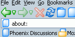
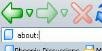
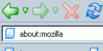
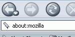
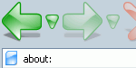
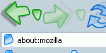
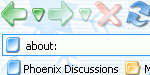

Phoenity is a theme with a minimalist concept and small, colorful icons. It's made to be sleek, robust and complete. The buttons are meant to look simple with gradient color effects.
Milestone
Phoenity 0.4 (111Kb)
Better support for Windows XP's button hover borders, but still quirky from the dropmarkers' borders.
Added an image for the bookmark toolbar icon (in the customize window)
Modified the vertical and horizontal splitter a bit.
Fixed the minor border coloring of the address bar menu dropdown.
Fixed the bold address bar text bug.
Fixed the missing close tab button when hovered.
Fixed the spacing bug between the bookmark icon and text.
Phoenity 0.3 (100Kb)
Streamlined bars, both on the menubar and the bookmarks toolbar.
Streamlined tabs with much flat look.
Added a preview image for the Preview pane. (main cause of file size increase)
Added more hover effects that look like Opera.
Bookmark folder icon slightly updated with much smaller document.
Dropmarkers turned into sub-buttons of the Back and Forward button.
Added some round edges to the group boxes and check boxes.
Fixed the messed up buttons and bars when customize.
Fixed the jumping list header bug.
Fixed the active state of the scrollbar button.
Fixed the 'bookmark bar pixel growing' bug.
Fixed the delayed tooltip bug (maybe).
Fixed the double/triple clicking bug on the menu items.
Fixed the bold text display bug when focusing and switching windows.
Fixed the height quirk when placing the bookmarks toolbar next to the menu bar.
Works much better when customized to Icons and Text and Text.
Phoenity 0.2 (96Kb)
Added hover effects on scrollbars and lists.
Updated the bookmarks folder image to be less flashy
Search bar made to be the same height as the address bar
Animated loading document icon added
The 'XPI/XUL dialog' bug fixed
Fixed the flickering buttons bug when customizing
Download, Boomarks and Reload buttons made much clearer and intuitive
The round dropmarker modified to be triangle instead
'undragable scrollbar' bug fixed
Phoenity 0.1 (100Kb)
First initial release
Have some little bugs..
Lighter version of the Phoenity theme.
Few words

This is a totally stripped down version of the original Phoenity theme, aimed towards a more space-saving design, both vertically and horizontally.
Milestone
Phoenity Lite 0.21 (101Kb)
Minor fix to the missing tab bar loading icon.
Phoenity Lite 0.2 (101Kb)
Change the aliased buttons into anti-aliased type.
Added the 20x20 pixel buttons. (main cause of file size increase)
Added an image for the bookmark toolbar icon (in the customize window)
Fixed the bold address bar text bug.
Fixed the jumpingBack and Forward button bug.
Fixed the missing close tab button when hovered.
Fixed the spacing bug between the bookmark icon and text.
Fixed the missing splitter of the sidebars.
Phoenity Lite 0.1 (65Kb)
First initial release, based on the Phoenity theme.
Have a few minor quirks
Phoenity theme beyond your wildest imagination.
Few words

Well, this is the big brother of the Phoenity family. It's pretty heavy with bigger buttons, based on the original Phoenity theme. Be warned that this theme will only respect 50% of you system colors and might slow down your old computer because it requires more rendering of the interface.
Milestone
Phoenity Beyond 0.2 (172Kb)
Added an image for the bookmark toolbar icon (in the customize window)
Modified the vertical and horizontal splitter a bit.
Fixed the jumpingBack and Forward button bug.
Fixed the bold address bar text bug.
Fixed the missing close tab button when hovered.
Fixed the spacing bug between the bookmark icon and text.
Phoenity Beyond 0.1 (157Kb)
First initial release, based on the Phoenity theme.
Have a few rendering quirks.
Phoenity in its most native form.
Few words

Native is the main keyword behind this build. Instead of sleek flat interface, this build follows the example of the good old NS4.x Classic Theme. The difference might be the colors. This one is more colorful and not so dull.
Milestone
Phoenity Classic 0.1 (112Kb)
First initial release.
Nothing much, just a bit boring.
Phoenity based on the Modern theme.
Few words

Phoenity theme based on Modern's codes. Modern theme based on Phoenity's buttons. This is neither the official Modern nor the official Phoenity. It's both (huh?). This theme is 90% clone of the official Modern theme for Mozilla, but modified a bit to look good in Phoenix.
Milestone
Phoenity Modern 0.11 (255Kb)
Fixed the hover effect bug on disabled buttons.
Fixed the messed up toolbar bug when switching windows.
Fixed the fav icon resizing bug in the address bar.
Phoenity Modern 0.1 (254Kb)
First initial release.
A few quirks..
Phoenity adapted from the Aqua look.
Few words

Are you a fan of MacOSX's Aqua buttons? Well, this theme is made just for you! The buttons have a sleek glass/crystal look with large sizes. Yeah, large sizes. I'm not too fond with the sizes but I hope everyone else will.
Milestone
Phoenity Aqua 0.1 (324Kb)
First initial release.
Few bugs on the button effect.
Phoenity under the shade.
Few words

This theme features the original Phoenity button icons moulded into odd shapes and applied with special effects when hovered. This would let you see a new perspective of Phoenity from a totally different angle. And sizes too, if you notice.
Milestone
Phoenity Shade 0.1 (341Kb)
First initial release.
Very little quirks.
Phoenity Christmas, the perfect gift for everyone.
Few words

Celebrate Christmas with Phoenix, using this special edition of the Phoenity family. Phoenity Christmas will get you into a better mood to celebrate Christmas, right in front of your computer! Note that this theme will respect 0% of your system colors, but it combines the look and feel of Aqua and Luna simultaneously.
The bookmark manager icons.. Anyone want these to be implemented?
Like the search bar? The search image? How about these..
You may not like the dull and broken images, therefore, I made these..
Credits
Special thanks to these people for giving me suggestions, ideas and more than I have expected. Also thanks to some other people (not listed here) for using my theme and sending me nice words.